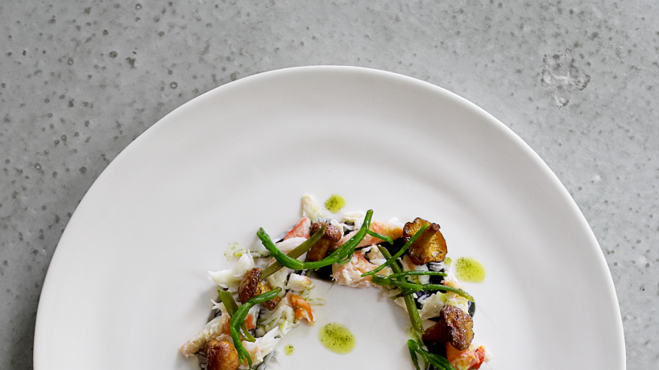

All the great recipes
Check out our video recipes



Easy recipe
6 people
1 hour
1 tbs of water
2 cups of flour
2 eggs
1 cup of sugar
1 tbs of water
2 cups of flour
2 eggs
1 cup of sugar
Wrap the crackers in a tea towel and smash up until fine, breaking
up any big bits with your hands, and put them into a large
bowl.
Finely chop the parsley, including the stalks. Add the parsley,
mustard, if using, and minced beef to the bowl. Crack in the egg
and add a good pinch of salt and pepper.
With clean hands, scrunch and mix everything up well. Divide into
6 and pat and mould each piece into a roundish shape about 2cm
thick. Drizzle the burgers with oil, put on a plate, cover and
place in the fridge until needed (this helps them to firm up).
Preheat a large griddle or frying pan for about 4 minutes on a
high heat. Turn the heat down to medium.
Place the burgers on the griddle or in the pan and use a spatula
to lightly press down on them, making sure the burger is in full
contact. Cook them to your liking for 3 or 4 minutes on each side
– you may need to cook them in two batches.
Wash and dry a few small lettuce leaves, tearing up the larger
ones. Slice the tomatoes. Peel and finely slice the red onion.
Slice the gherkins lengthways as finely as you can. Place all this
on a platter and put in the middle of the table with plates,
cutlery, ketchup and drinks.
Remove your burgers to another plate and carefully wipe your pan
or griddle clean with kitchen paper.
Halve your burger buns and lightly toast them on the griddle or in
the pan. Also great with a chopped salad.